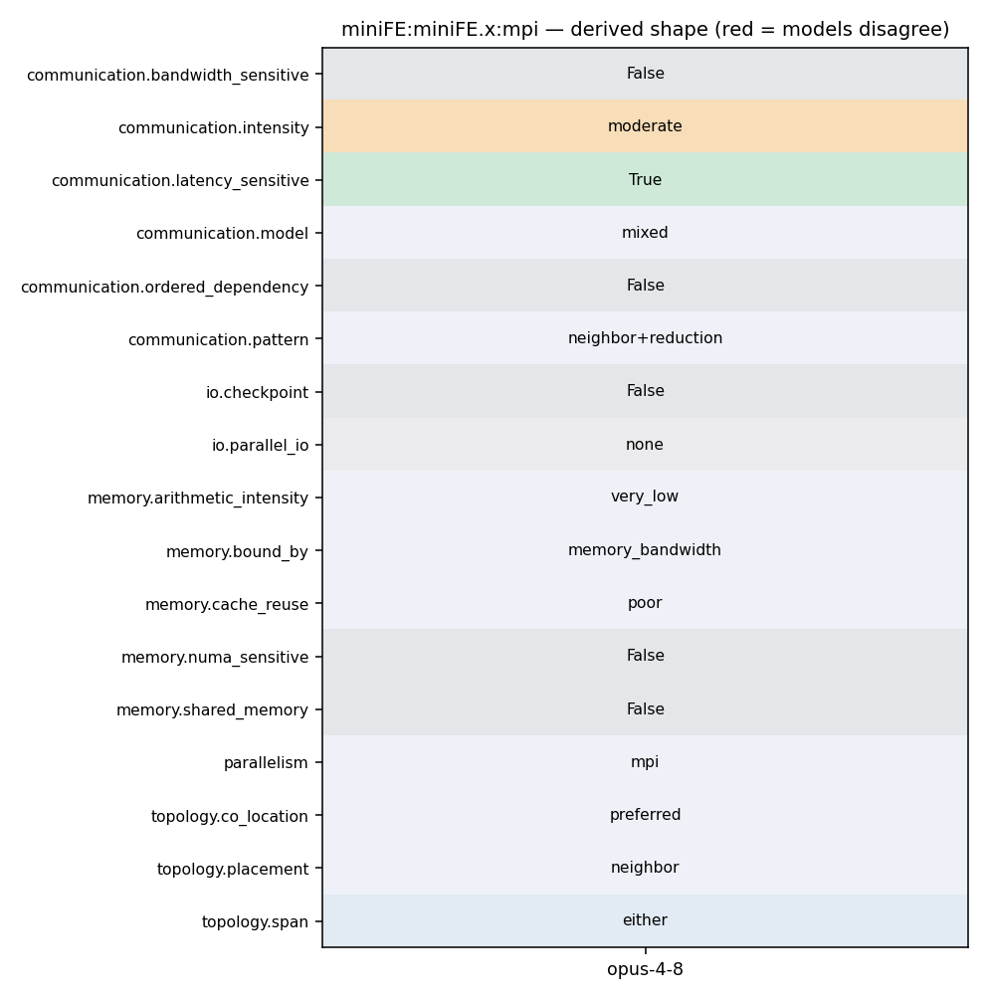

mpirun ./miniFE.x -nx <X> -ny <Y> -nz <Z>
93 MPI_Datatype mpi_dtype = TypeTraits<Scalar>::mpi_type(); 94 95 // Post receives first 96 for(int i=0; i<num_neighbors; ++i) { 97 int n_recv = recv_length[i]; 98 MPI_Irecv(x_external, n_recv, mpi_dtype, neighbors[i], MPI_MY_TAG, 99 MPI_COMM_WORLD, &request[i]); 100 x_external += n_recv; 101 } 102 103 #ifdef MINIFE_DEBUG 104 os << "launched recvs\n"; 105 #endif 106 107 // 108 // Fill up send buffer 109 // 110 111 size_t total_to_be_sent = elements_to_send.size(); 112 #ifdef MINIFE_DEBUG 113 os << "total_to_be_sent: " << total_to_be_sent << std::endl; 114 #endif 115 116 for(size_t i=0; i<total_to_be_sent; ++i) {
93 MPI_Datatype mpi_dtype = TypeTraits<Scalar>::mpi_type(); 94 95 // Post receives first 96 for(int i=0; i<num_neighbors; ++i) { 97 int n_recv = recv_length[i]; 98 MPI_Irecv(x_external, n_recv, mpi_dtype, neighbors[i], MPI_MY_TAG, 99 MPI_COMM_WORLD, &request[i]); 100 x_external += n_recv; 101 } 102 103 #ifdef MINIFE_DEBUG
218 #ifdef HAVE_MPI 219 magnitude local_dot = result, global_dot = 0; 220 MPI_Datatype mpi_dtype = TypeTraits<magnitude>::mpi_type(); 221 MPI_Allreduce(&local_dot, &global_dot, 1, mpi_dtype, MPI_SUM, MPI_COMM_WORLD); 222 return global_dot; 223 #else 224 return result;
95 // Post receives first 96 for(int i=0; i<num_neighbors; ++i) { 97 int n_recv = recv_length[i]; 98 MPI_Irecv(x_external, n_recv, mpi_dtype, neighbors[i], MPI_MY_TAG, 99 MPI_COMM_WORLD, &request[i]); 100 x_external += n_recv; 101 } 102 103 #ifdef MINIFE_DEBUG 104 os << "launched recvs\n"; 105 #endif 106 107 // 108 // Fill up send buffer 109 // 110 111 size_t total_to_be_sent = elements_to_send.size(); 112 #ifdef MINIFE_DEBUG 113 os << "total_to_be_sent: " << total_to_be_sent << std::endl; 114 #endif 115 116 for(size_t i=0; i<total_to_be_sent; ++i) { 117 #ifdef MINIFE_DEBUG 118 //expensive index range-check:
218 #ifdef HAVE_MPI 219 magnitude local_dot = result, global_dot = 0; 220 MPI_Datatype mpi_dtype = TypeTraits<magnitude>::mpi_type(); 221 MPI_Allreduce(&local_dot, &global_dot, 1, mpi_dtype, MPI_SUM, MPI_COMM_WORLD); 222 return global_dot; 223 #else 224 return result;
93 MPI_Datatype mpi_dtype = TypeTraits<Scalar>::mpi_type(); 94 95 // Post receives first 96 for(int i=0; i<num_neighbors; ++i) { 97 int n_recv = recv_length[i]; 98 MPI_Irecv(x_external, n_recv, mpi_dtype, neighbors[i], MPI_MY_TAG, 99 MPI_COMM_WORLD, &request[i]); 100 x_external += n_recv; 101 } 102 103 #ifdef MINIFE_DEBUG 104 os << "launched recvs\n"; 105 #endif 106 107 // 108 // Fill up send buffer 109 // 110 111 size_t total_to_be_sent = elements_to_send.size(); 112 #ifdef MINIFE_DEBUG 113 os << "total_to_be_sent: " << total_to_be_sent << std::endl; 114 #endif 115 116 for(size_t i=0; i<total_to_be_sent; ++i) {
215 result += xcoefs[i]*ycoefs[i]; 216 } 217 218 #ifdef HAVE_MPI 219 magnitude local_dot = result, global_dot = 0; 220 MPI_Datatype mpi_dtype = TypeTraits<magnitude>::mpi_type(); 221 MPI_Allreduce(&local_dot, &global_dot, 1, mpi_dtype, MPI_SUM, MPI_COMM_WORLD); 222 return global_dot; 223 #else 224 return result; 225 #endif
121 ScalarType one = 1.0; 122 ScalarType zero = 0.0; 123 124 TICK(); waxpby(one, x, zero, x, p); TOCK(tWAXPY); 125 126 // print_vec(p.coefs, "p"); 127 128 TICK(); 129 matvec(A, p, Ap); 130 TOCK(tMATVEC); 131 132 TICK(); waxpby(one, b, -one, Ap, r); TOCK(tWAXPY);
78 6. Figure of Merit for MiniFE 79 80 MiniFE will dump a YAML file at the end of execution. The FOM we are 81 most interested in is the MFLOP/s achieved for the CG solve but we have 82 some additional interest in the matrix-structure and FE-assembly times 83 reported at the top of the file. The CG MFLOP/s are algorithmic FLOP/s 84 and are constant over all runs of the same problem size. Users can see 85 the various kernel break downs for more information about where time is 86 spent in the main CG kernel. 87
14 CXXFLAGS = $(CFLAGS) 15 16 CPPFLAGS = -I. -I../utils -I../fem $(MINIFE_TYPES) $(MINIFE_MATRIX_TYPE) \ 17 -DHAVE_MPI -DMPICH_IGNORE_CXX_SEEK \ 18 -DMINIFE_REPORT_RUSAGE 19 20 LDFLAGS=
20 LDFLAGS= 21 LIBS= 22 23 CXX=mpicxx 24 CC=mpicc 25 26 #CXX=g++
10 11 To build MiniFE you should first select which version you want to use 12 for your study. Different implementations are provided by the basic 13 "ref" version was the original code (written to use MPI only). Since 14 then, various versions of OpenMP and CUDA have been added. 15 16 You should edit the Makefile found in selected implementation.
93 MPI_Datatype mpi_dtype = TypeTraits<Scalar>::mpi_type(); 94 95 // Post receives first 96 for(int i=0; i<num_neighbors; ++i) { 97 int n_recv = recv_length[i]; 98 MPI_Irecv(x_external, n_recv, mpi_dtype, neighbors[i], MPI_MY_TAG, 99 MPI_COMM_WORLD, &request[i]); 100 x_external += n_recv; 101 } 102 103 #ifdef MINIFE_DEBUG 104 os << "launched recvs\n"; 105 #endif 106 107 // 108 // Fill up send buffer 109 // 110 111 size_t total_to_be_sent = elements_to_send.size(); 112 #ifdef MINIFE_DEBUG 113 os << "total_to_be_sent: " << total_to_be_sent << std::endl; 114 #endif 115 116 for(size_t i=0; i<total_to_be_sent; ++i) {
218 #ifdef HAVE_MPI 219 magnitude local_dot = result, global_dot = 0; 220 MPI_Datatype mpi_dtype = TypeTraits<magnitude>::mpi_type(); 221 MPI_Allreduce(&local_dot, &global_dot, 1, mpi_dtype, MPI_SUM, MPI_COMM_WORLD); 222 return global_dot; 223 #else 224 return result;
65 // Extract Matrix pieces 66 67 int local_nrow = A.rows.size(); 68 int num_neighbors = A.neighbors.size(); 69 const std::vector<LocalOrdinal>& recv_length = A.recv_length; 70 const std::vector<LocalOrdinal>& send_length = A.send_length; 71 const std::vector<int>& neighbors = A.neighbors;
50 Y-dimension for the next run. Keep the Z-dimension fixed. This is useful 51 for some application runs. 52 53 (2) Or: define a base problem size (nx * ny * nz) and then use the 54 following equation set nz = ny = nz = cbrt( (base_nx * base_ny * 55 base_nz) * (number of MPI ranks) ). This is useful for some other 56 application runs. 57 58 Note - that (1) and (2) create different communication volumes/patterns 59 and execute over threaded compute resources. They are both of interest.